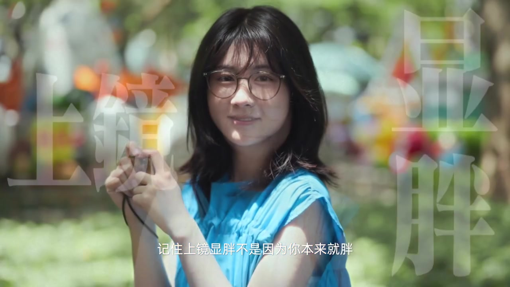
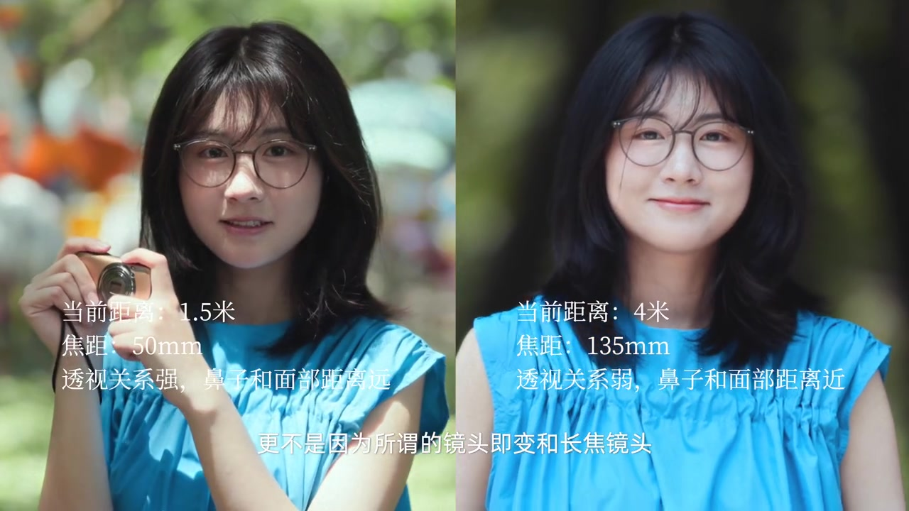
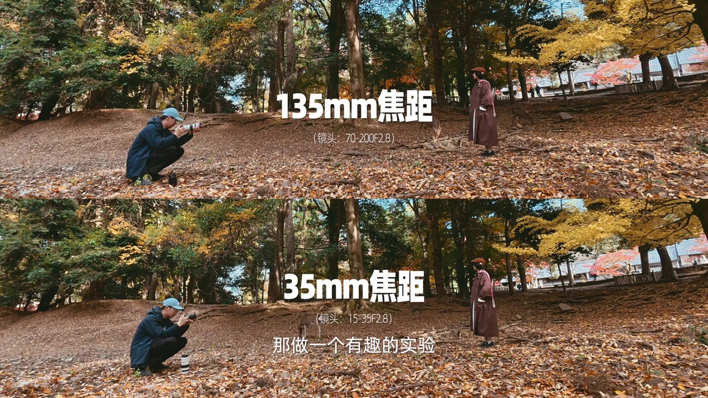
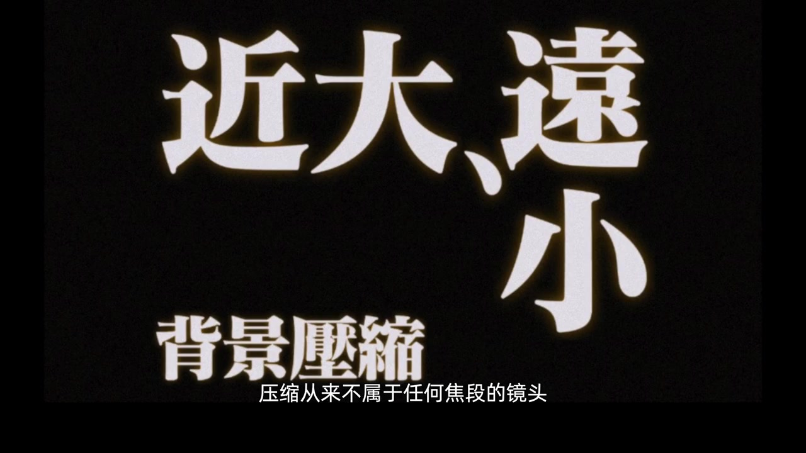
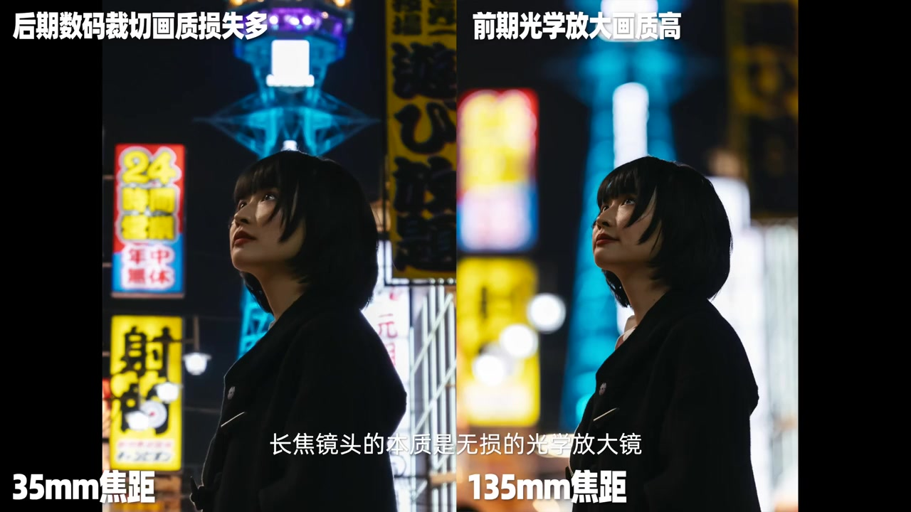
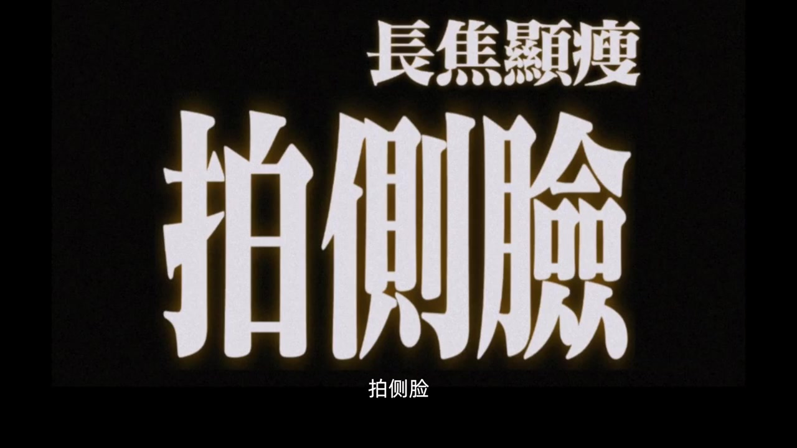
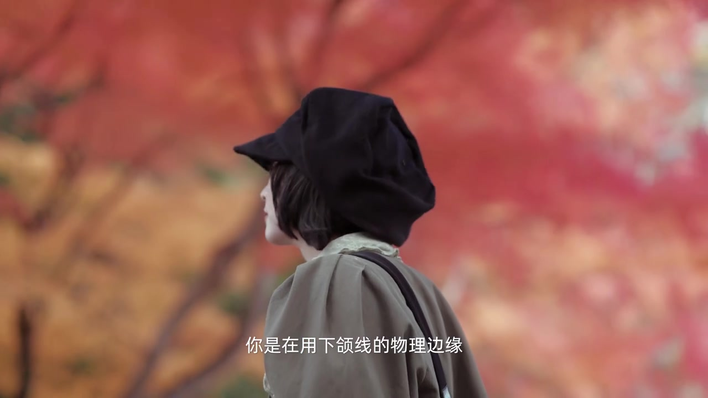

开场：上镜显胖，不是你胖，也不是镜头的锅
视频一上来就把常见归因拆掉：叠字「上镜」「显胖」压在人像两侧，字幕直接说——记住上镜显胖不是因为你本来就胖，更不是因为所谓的镜头畸变和长焦镜头。语气轻松，但命题很硬：别把「胖十斤」甩给镜子或焦段。
画面字幕：「记住上镜显胖不是因为你本来就胖」／「更不是因为所谓的镜头畸变和长焦镜头」
说明：Whisper 将「镜头畸变」误识为「镜头机变」。下文叙述以可见字幕与画面为准；页面末尾仍完整保留全部 Whisper 分段。

真正决定胖瘦的，是你和镜头之间的物理距离
接下来画面用对比卡把机制钉死：一侧约 1.5 米／50mm，透视强、鼻子与面部距离感更远；另一侧约 4 米／135mm，透视弱、鼻子与面部更「贴」。随后又切到约 1 米／24mm 的强透视特写，并打出「近大远小」图解——距离一变，鼻子和面部比例就被重塑。
画面字幕：「真正决定胖瘦的是你和镜头之间的物理距离」；「近大远小的透视关系」
说明：Whisper 将「近大远小」误识为「尽大原小」。

有趣实验：距离不变，换 35mm 与 135mm
讲述者提议做一个对照：保持人和镜头距离不变，分别用 35mm 和 135mm。秋叶林里出现上下分屏——上面 135mm（70-200），下面 35mm（15-35），同一场景、同一机位距离。随后把画面裁切／放大对齐，你会发现背景的压缩程度根本没变。
画面字幕：「那做一个有趣的实验」；「分别用35毫米和135毫米」；「背景的压缩程度根本没变」
说明：Whisper 将「做一个」误识为「作为一个」；「画面拍摄放大」按语音与后文「数码裁切」语境，叙述按「裁切放大」理解，转录区保留原文。

物理真相：压缩不属于任何焦段
黑场大字接连抛出「近大远小」「背景压缩」，字幕收束成一句物理判断：压缩从来不属于任何焦段的镜头，它只属于远距离产生的弱透视，让画面变扁平。长焦看起来「压背景」，其实是你退得够远。
画面字幕：「压缩从来不属于任何焦段的镜头」；「它只属于远距离而产生的弱透视」；「让画面变扁平」
说明：Whisper 将「变扁平」误识为「变变平」。

长焦是什么：无损的光学放大镜
夜景人像左右对照：左侧 35mm 后期数码裁切、画质损失多；右侧 135mm 前期光学放大、画质更高。字幕点题——长焦镜头的本质是无损的光学放大镜。可一旦为了极致背景压缩推到约 20 米开外，人脸上五官的深度也会悄然消失，视觉上只能横向扩张，于是出现「上镜胖」的观感。
画面字幕：「长焦镜头的本质是无损的光学放大镜」；「推到20米开外时」；「人脸上的五官的深度也悄然消失了」

既要压缩又要立体显瘦：版本答案是拍侧脸
矛盾摆上台面：既想要背景压缩感，又想要立体显瘦——「版本答案」只有三个字：拍侧脸。极远距离会抹平正面纵深，却抹不掉侧面轮廓线；模特一转头，你是在用下颌线的物理边缘，在被压平的空间里重新切出立体感。
画面字幕：「那既想要背景压缩感」；「又想要立体显瘦」；「版本答案是什么呢」；「拍侧脸」；「你是在用下颌线的物理边缘」
说明：Whisper 将「压缩感／立体显瘦／下颌线」误识为「压缩改／立体享受／下河线」。


收束：成熟摄影不是被参数绑架
室内暖光中，讲述者翻着书看向镜头，把整段论证落成态度：真正成熟的摄影，不是被参数绑架，而是合理利用距离和角度，去驯化光学的性格。焦段、畸变、压缩这些词可以谈，但真正的旋钮是距离与角度。
画面字幕：「所以真正成熟的摄影不是被参数绑架」；「而是合理利用距离和角度」；「去驯化光学的性格」
说明：Whisper 将「驯化」误识为「训化」。